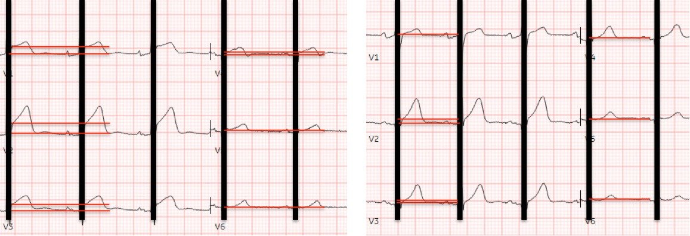
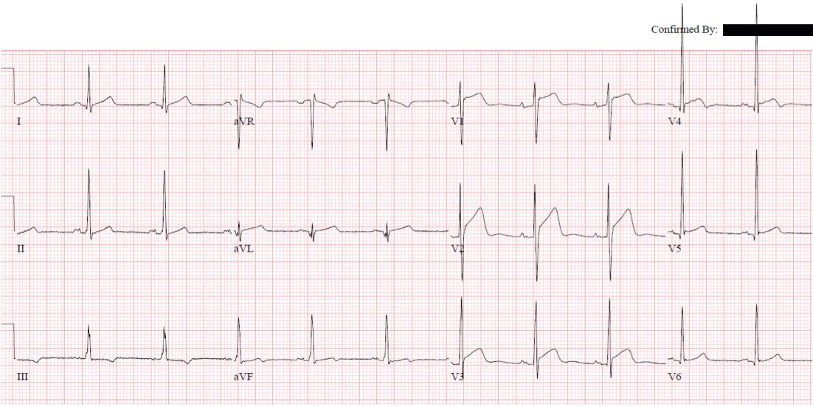
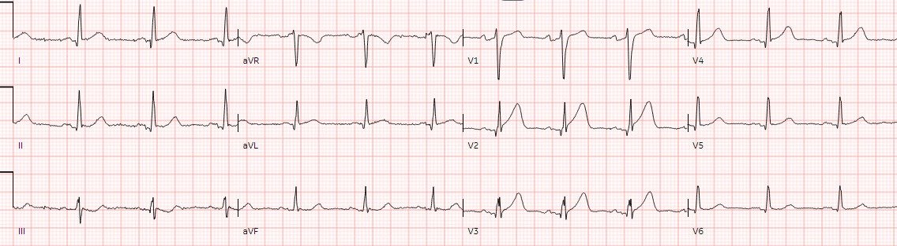
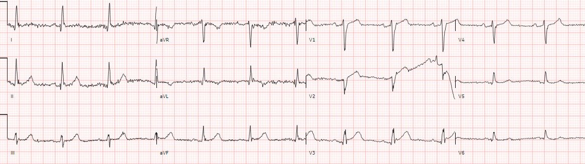
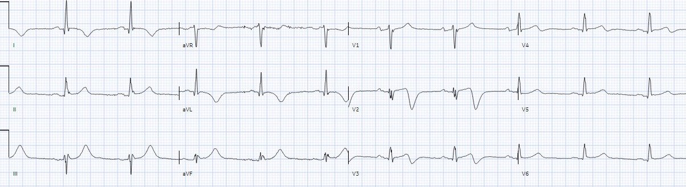
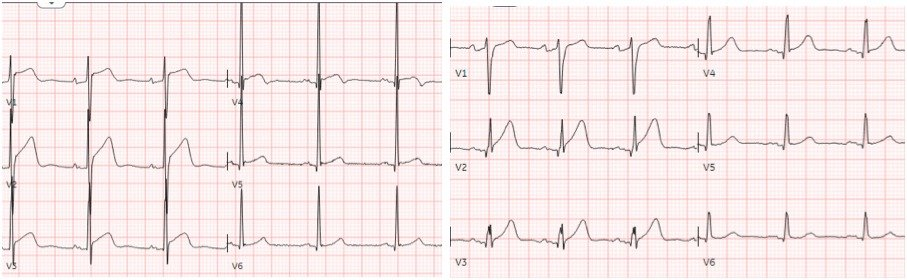
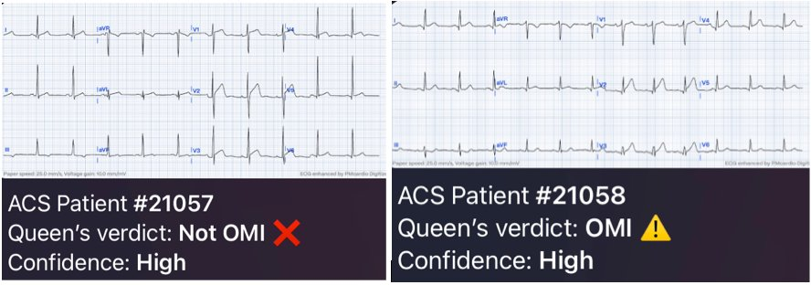
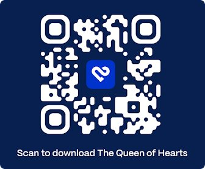
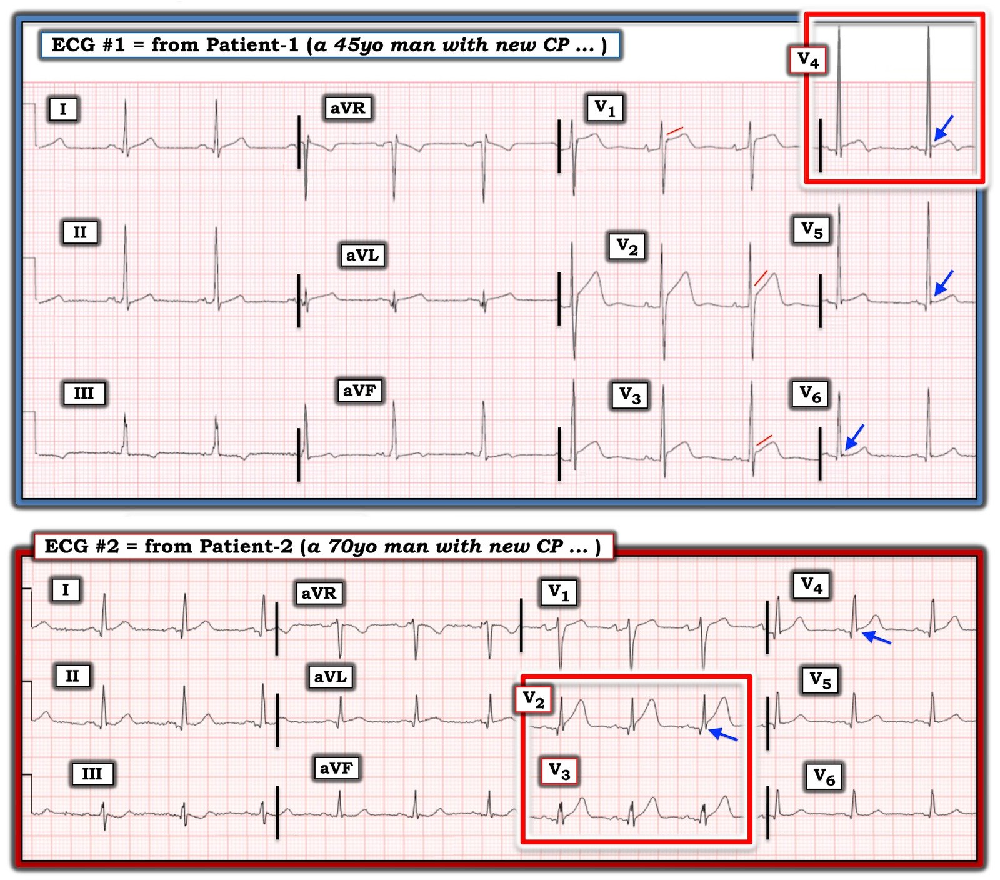

17/01/2024 — Hai bệnh nhân đau ngực, với QRS bị che đi: ca nào STEMI dương tính, và ca nào bị nhồi máu cơ tim do tắc (OMI)?
Bản dịch tiếng Việt của bài "Two patients with chest pain, with QRS obscured: which was STEMI positive, and which had Occlusion MI?" – Dr. Smith’s ECG Blog. Giữ nguyên toàn bộ 10 hình ảnh của bản gốc.
Bài viết của Jesse McLaren
Hai bệnh nhân
đến viện vì đau ngực cấp, và dưới đây là các chuyển đạo trước tim V1-6 của
từng người. Bệnh nhân 1 (điện tâm đồ bên trái) là nam 45 tuổi, và bệnh nhân 2 (điện tâm đồ
bên phải) là nam 70 tuổi. Các chuyển đạo chi đã được lược bỏ vì
không có ST chênh lên ở các chuyển đạo đó, các phức bộ QRS đã bị
che đi vì chúng không liên quan đến tiêu chuẩn STEMI, và các đường kẻ đỏ đã được thêm vào để đo mức ST chênh lên.
Theo
mô hình hiện hành, bạn có biết bệnh nhân nào bị tắc mạch vành cấp (acute coronary occlusion) không? Dựa vào
biên độ sóng T, bạn có biết điện tâm đồ nào có sóng T tối cấp (hyperacute T waves) không? Bạn muốn xem những phần nào khác
của điện tâm đồ, và bạn sẽ dùng chúng thế nào để tinh chỉnh
nhận định của mình?
Bệnh nhân 1 Bệnh nhân 2


Tiêu chuẩn STEMI
chỉ dựa trên tiêu chuẩn milimét của ST chênh lên, đo tách rời khỏi QRS
và phân tầng theo tuổi/giới, nên đây là thông tin duy nhất được cung cấp ở trên. Dựa
trên tuổi/giới, tiêu chuẩn STEMI cho cả hai bệnh nhân là ST chênh lên ở 2
chuyển đạo liên tiếp, mức 2mm ở V2-3 và 1mm ở mọi chuyển đạo khác.
Bạn đã có đủ mọi
thông tin cần thiết để áp dụng tiêu chuẩn STEMI: điện tâm đồ bên trái là STEMI
dương tính và điện tâm đồ bên phải là STEMI âm tính. Vì vậy, theo mô hình
hiện hành, nên kích hoạt phòng thông tim (cath lab) cho bệnh nhân bên trái nhưng không
cho bệnh nhân bên phải. Nếu xét biên độ sóng T một cách tách rời, cả hai
điện tâm đồ đều có sóng T kích thước tương tự nhau, nên điều này dường như không giúp ích cho việc
phân biệt hai điện tâm đồ này.
STEMI và OMI
Bây giờ hãy xem
phần còn lại của điện tâm đồ: bạn có biết bệnh nhân nào bị tắc mạch vành cấp,
và điện tâm đồ nào có sóng T tối cấp không?
Bệnh nhân 1 (điện tâm đồ trên cùng
bên trái): bạn nghĩ gì?


Giờ đây khi đã
thấy QRS, ta nhận ra điện thế lớn, tràn ra ngoài trang giấy ở V4, với
sóng ST/T tương xứng. Smith đã chỉ ra rằng tắc LAD và các biến thể bình thường
có thể có mức ST chênh lên và biên độ sóng T tương tự nhau, nhưng điều phân biệt chúng
là QRS ở V2, sóng R ở V4 và khoảng QT [1] – tất cả đều
mang tính trấn an ở ca này.
Nhưng tiêu chuẩn
STEMI bỏ qua tất cả những điều này và chỉ xem đoạn ST một cách tách rời. Kết quả đọc ban đầu
bằng máy tính và kết quả đọc cuối cùng của bác sĩ tim mạch là một chẩn đoán phân biệt: “ST chênh lên,
cân nhắc tái cực sớm, viêm màng ngoài tim, hoặc tổn thương.” Dựa trên tiêu chuẩn
STEMI và kết quả đọc bằng máy tính không hữu ích, bệnh nhân được đưa gấp đến
phòng thông tim. Nhưng động mạch vành bình thường, troponin nhiều lần đều bình thường, CT ngực bình thường,
và bệnh nhân được cho xuất viện.
Bệnh nhân 2 (điện tâm đồ
trên cùng bên phải): bạn nghĩ gì?


Nhìn vào
QRS, ta thấy sóng Q nhỏ ở V2-3 và mất sóng R ở V3 – điều này loại trừ
biến thể bình thường. Biên độ QRS ở V2 và sóng R ở V4 nhỏ hơn nhiều so với
điện tâm đồ ở trên, khiến ST chênh lên vùng trước đáng lo ngại hơn. Và so
với QRS ở V2-3, sóng T rất lớn. Điều này đủ để chẩn đoán tắc
LAD, nhưng nhìn vào phần còn lại của điện tâm đồ, ta còn thấy đoạn ST dạng xuống/lên ở
III, soi gương với một chút gợi ý ST chênh lên ở aVL – điều này khu trú vị trí tắc
ở LAD đoạn gần.
Nhưng kết quả đọc
bằng máy tính ban đầu là “điện tâm đồ bình thường”,
và đã được một bác sĩ ký xác nhận, nên bệnh nhân vẫn ở lại phòng chờ.
May mắn là troponin đầu tiên tăng ở mức 97ng/L (bình thường <26 ở
nam) nên bệnh nhân được đưa vào phòng khám để ghi lại điện tâm đồ:


Giờ đây đã có
sóng Q đầy đủ ở V2 nhưng sóng T đã xẹp xuống, gợi ý có phần nào tái tưới máu tại thời điểm ghi điện tâm đồ. Phòng thông tim được kích hoạt và
phát hiện tắc 100% LAD, với troponin I đỉnh 8227 ng/L. Ca này là một trong
4% ca báo động STEMI (Code STEMI) dương tính thật có điện tâm đồ ban đầu bị kết quả đọc
bằng máy tính dán nhãn ‘bình thường’,[2] và còn hàng chục ca tương tự khác được trình bày chi tiết tại đây.
Điện tâm đồ lúc
ra viện cho thấy tình trạng mất sóng R ở V2 vẫn còn, và sóng T đảo ngược do tái tưới máu ở vùng trước bên:


Kết quả đọc STEMI bằng máy tính và AI về OMI
So sánh hai
điện tâm đồ khi có cả QRS, ST chênh lên ở bên trái lớn hơn nhưng tương xứng với
điện thế lớn. Biên độ sóng T tương tự nhau, nhưng xét tương quan với
QRS tương ứng, sóng T bên trái là bình thường còn sóng T bên phải là
tối cấp. Đó là lý do vì sao chìa khóa để đánh giá sóng T tối cấp là
tính tương xứng (proportionality) so với QRS.[3]
Bệnh nhân 2 Bệnh nhân 2


Mô hình
STEMI, và các kết quả đọc bằng máy tính dựa trên mô hình này, chỉ xem đoạn
ST và đo nó tách rời khỏi QRS. Không có gì ngạc nhiên khi điều này dẫn
đến tỷ lệ dương tính giả và âm tính giả cao. Các dấu hiệu OMI trên điện tâm đồ –
bao gồm việc nhìn điện tâm đồ một cách tổng thể và đánh giá đoạn ST và sóng T
dựa trên tính tương xứng – chính xác hơn nhiều [4] và đã được dạy cho
AI.[5]
Tôi đã gửi các điện tâm đồ
đầu tiên của từng bệnh nhân cho Queen of Hearts:
Bệnh nhân 1 Bệnh nhân 2


Như vậy Queen
có độ tin cậy cao rằng điện tâm đồ ‘STEMI dương tính’ là Không phải OMI, và có độ tin cậy
cao rằng điện tâm đồ ‘bình thường’ là OMI. Điều này lẽ ra đã có thể giúp tránh một lần kích hoạt
phòng thông tim không cần thiết cho bệnh nhân thứ nhất có động mạch vành bình thường, và
đẩy nhanh việc kích hoạt phòng thông tim cho bệnh nhân thứ hai bị tắc LAD.
BẠN CŨNG CÓ THỂ CÓ BOT AI PM Cardio!! (ỨNG DỤNG AI OMI CỦA PM CARDIO)
Nếu bạn muốn bot này giúp bạn chẩn đoán sớm OMI và cứu bệnh nhân cùng cơ tim của họ, bạn có thể đăng ký để nhận phiên bản beta sớm của bot tại đây.
Tại đây bạn sẽ đăng ký Queen of Hearts trên ứng dụng Telegram:
https://share-eu1.hsforms.com/18cAH0ZK0RoiVG3RjC5dYdwfyfsg (biểu mẫu đăng ký Queen of Hearts)
Hoặc, bạn có thể tải ứng dụng PM Cardio có chức năng Queen of Hearts qua mã QR này.
Khi đăng ký trên ứng dụng, bạn cần khai rằng mình đến từ một quốc gia được hỗ trợ trong EU. Bạn sẽ nhận được 5 báo cáo miễn phí. Sau đó, phí là $30 mỗi tháng.


Điều cần nhớ
1.
Tiêu chuẩn
STEMI chỉ xem đoạn ST và đo chúng tách rời khỏi QRS, điều này
dẫn đến tỷ lệ dương tính giả và âm tính giả cao
2.
Các dấu hiệu OMI trên điện tâm đồ bao gồm việc nhìn điện tâm đồ một cách tổng thể (gồm sóng Q cấp, mất sóng R,
ST chênh xuống soi gương, ST chênh lên kín đáo, và sóng T tối cấp), và đánh giá ST/T tương quan với QRS
3.
Các kết quả
đọc bằng máy tính thông thường không đáng tin cậy (kể cả những kết quả dán nhãn ‘bình thường’), nhưng
AI được chuyên gia huấn luyện chính xác hơn nhiều
Tài liệu tham khảo
1.
Driver
và cs. A new 4-variable formula to differentiate normal variant ST segment
elevation in V2-V4 (early repolarization) from subtle left anterior descending
coronary occlusion – adding QRS amplitude of V2 improves the model. Tạp chí J
Electrocardiol, 2017
2.
McLaren,
Meyers, Smith và Chartier. Emergency department Code STEMI patients with
initial electrocardiogram labeled ‘normal’ by computer interpretation: a 7-year
retrospective review. Tạp chí Acad Emerg Med, 2023
3.
Smith,
Meyers. Hyperacute T waves can be a useful sign of occlusion myocardial
infarction if appropriately defined. Tạp chí Ann Emerg Med, 2023
4.
Meyers,
Bracey và cs. Accuracy of OMI ECG findings versus STEMI criteria for diagnosis
of acute coronary occlusion myocardial infarction. Tạp chí IJC Heart and Vasc, 2021
5. Herman,
Meyers, Smith và cs. International evaluation of an artificial
intelligence-powered electrocardiogram model detecting acute coronary occlusion
myocardial infarction. Tạp chí Eur Heart J Dig Health, 2023

===================================
BÌNH LUẬN CỦA TÔI, bởi KEN GRAUER, MD (17/1/2024):
===================================
Bài viết hôm nay của BS. McLaren một lần nữa nhấn mạnh tầm quan trọng của “tính tương xứng” — trong việc đánh giá ý nghĩa lâm sàng của hình dạng sóng ST-T ở bệnh nhân đến viện vì đau ngực – CP (Chest Pain).
- Dù hoàn toàn đồng ý với khái niệm MẤU CHỐT mà BS. McLaren truyền tải (cụ thể là, việc áp dụng máy móc “Mô hình STEMI” – vốn vẫn còn được chấp nhận quá phổ biến – dẫn đến quá nhiều chẩn đoán sai) — tôi xin đề xuất thêm một góc nhìn về cách tôi cân nhắc những ý tưởng này.
Góc nhìn của tôi dựa vào việc nhớ lại một hoặc nhiều cụm từ ngắn sau đây, có thể đóng vai trò như những “Câu thần chú điện tâm đồ” ( = lời nhắc lâm sàng) về các nguyên tắc MẤU CHỐT này. Những cụm từ này gồm:
- “Có 1 hoặc 2 trong 12 chuyển đạo nào cho bạn câu trả lời không”
- “Hình dạng quan trọng hơn mức độ.”
- “Các chuyển đạo lân cận? — và phần còn lại của điện tâm đồ!”
- “Bạn có giải thích được tất cả các dấu hiệu không?”
THỬ THÁCH:
Tôi sẽ nói rõ hơn về các Câu thần chú điện tâm đồ này ngay sau đây — nhưng TRƯỚC HẾT — Hãy NHÌN lại 2 điện tâm đồ ban đầu trong ca hôm nay, mà để cho rõ ràng — tôi đã ghép lại trong Hình 1:
- Một hoặc nhiều Câu thần chú điện tâm đồ ở trên có thể áp dụng THẾ NÀO cho 2 điện tâm đồ trong Hình 1?


==================================
Áp dụng các Câu thần chú điện tâm đồ ở trên: Vì cả hai bệnh nhân trong bài Blog hôm nay đều đến viện với đau ngực mới khởi phát — hiệu quả về thời gian trong việc xác định có cần thông tim kịp thời hay không là thiết yếu để có kết cục tối ưu.
==================================
Có 1 hoặc 2 Chuyển đạo nào cho bạn câu trả lời không?
- “Được trang bị” kiến thức rằng Bệnh nhân 2 là nam 70 tuổi với đau ngực mới — tôi thực sự mất chưa đến 5 giây để biết rằng cần thông tim kịp thời. “Mắt” tôi lập tức tập trung vào 2 chuyển đạo nằm trong hình chữ nhật ĐỎ ở điện tâm đồ #2. Như BS. McLaren đã nêu — sóng T tối cấp ở chuyển đạo V2 và V3 rất lớn ( = bằng hoặc vượt chiều cao sóng R ở cùng chuyển đạo — với sóng T “béo” hơn ở đỉnh và rộng hơn ở chân so với mức dự kiến dựa trên biên độ QRS ở V2,V3).
- Vì vậy, ngay khi nhìn thấy sóng ST-T ở chuyển đạo V2,V3 của điện tâm đồ #2 — tôi biết rằng cần thông tim kịp thời kèm PCI cho OMI cấp này. Việc đánh giá các dấu hiệu điện tâm đồ ở các chuyển đạo khác ủng hộ nhận định của tôi — nhưng 2 chuyển đạo này là tất cả những gì tôi cần để có “Câu trả lời”.
- Đối với Bệnh nhân 1 — Việc đánh giá phức bộ QRST nằm trong hình chữ nhật ĐỎ một lần nữa lập tức gợi ý câu trả lời cho tôi. Đó là vì biên độ QRS ở chuyển đạo V4 rất lớn — đi kèm QTc tương đối ngắn — khía điểm J (mũi tên XANH ở chuyển đạo này) — và “gương mặt” đoạn ST rất đặc trưng của một biến thể tái cực, với phần cuối sóng T đảo ngược trông lành tính (Xem Bình luận của tôi ở cuối trang trong bài ngày 19 tháng Năm năm 2022 trên Dr. Smith’s ECG Blog).
Hình dạng quan trọng hơn Mức độ!
Câu thần chú điện tâm đồ này về hình dạng của các biến dạng sóng ST-T — bao hàm khái niệm “tính tương xứng” (vì hình dạng sóng ST-T “bình thường” phụ thuộc vào kích thước tương đối so với phức bộ QRS ở chuyển đạo đang được xem xét). Ngoài ra — các biến dạng ST-T nhỏ có hình dạng bất thường có thể tỏ ra quan trọng hơn một mức lệch đoạn ST nhất định.
- Xin nhấn mạnh — rằng dù tôi hoàn toàn đồng ý với BS. McLaren rằng điện tâm đồ #1 gần như chắc chắn là một biến thể tái cực và không phải OMI — “mắt” tôi không thể không chú ý đến hình dạng bất thường của đoạn khởi đầu ST thẳng đuỗn ở chuyển đạo V1,V2,V3 (các đường ĐỎ thẳng trong các chuyển đạo này). Bình thường, đoạn ST ở các chuyển đạo trước này phải dốc lên nhẹ nhàng (thay vì thẳng đuỗn). Vì vậy, dù tôi rất nghiêng về kết luận “không phải OMI” ở người nam 45 tuổi này, người nhiều khả năng có LVH và một biến thể tái cực — tôi cảm thấy hình dạng của các đoạn ST chênh lên và thẳng đuỗn bất thường ở 3 chuyển đạo trước liên tiếp đòi hỏi thêm thông tin bổ sung trước khi tôi có thể tin chắc 100% rằng điện tâm đồ #1 không phản ánh một thay đổi cấp tính chồng lên.
- Một ví dụ khác về vai trò của hình dạng cũng thấy rõ ở điện tâm đồ #2 — dưới dạng T-QRS-D (biến dạng phần cuối QRS – Terminal QRS Distortion) — nếu không phải ở chuyển đạo V2 (nơi sóng s bị cắt cụt gần chạm tới đường nền) — thì ở chuyển đạo V4 (Xem Bình luận của tôi và hình minh họa T-QRS-D trong bài ngày 14 tháng Mười Một năm 2019 trên Dr. Smith’s ECG Blog).
Các chuyển đạo lân cận? — và phần còn lại của điện tâm đồ!
- Ở trên tôi đã nêu bật việc chỉ cần nhìn một lần vào chuyển đạo V4 ở điện tâm đồ #1 — đã gợi ý mạnh đến khả năng LVH và một biến thể tái cực (và không phải OMI). Tiếp theo tôi áp dụng khái niệm rằng càng nhiều chuyển đạo cho thấy dấu hiệu tương tự ở cùng một vùng giải phẫu — khả năng nhận định của bạn chính xác càng cao. Do đó, nhận định của tôi về khả năng LVH ở một bệnh nhân có biến thể tái cực được củng cố bởi khía điểm J ở các chuyển đạo lân cận (các mũi tên XANH không chỉ ở chuyển đạo V4 — mà còn ở chuyển đạo V5,V6 của điện tâm đồ #1) — cũng như bởi sóng R rất cao ở chuyển đạo V5,V6.
- Ở điện tâm đồ #2 — tôi đã nêu bật việc chỉ cần nhìn một lần vào 2 chuyển đạo nằm trong hình chữ nhật ĐỎ ở điện tâm đồ #2 là đủ để thuyết phục tôi về sự cần thiết phải thông tim kịp thời. Gợi ý T-QRS-D ở chuyển đạo V4 lân cận cung cấp thêm bằng chứng ủng hộ (mũi tên XANH cho thấy sóng s ở V4 không đi xuống tới đường nền).
- Trong bối cảnh này — mất sóng r từ chuyển đạo V1, dẫn đến các sóng q nhỏ-nhưng-có-ý-nghĩa không chỉ ở chuyển đạo V2,V3 — mà còn ở các chuyển đạo V4,V5,V6 lân cận là có ý nghĩa (tức là, Sóng q vách có thể thấy bình thường ở chuyển đạo V4,V5,V6 — nhưng không nên thấy ở vị trí phía trước tới tận chuyển đạo V2,V3 — và sóng Q ở chuyển đạo V2 không nên lớn hơn sóng q ở chuyển đạo V5,V6).
- Như BS. McLaren đã nêu — phần còn lại của điện tâm đồ #2 phù hợp với OMI do LAD, ở chỗ có đoạn ST tối cấp kín đáo (nếu không muốn nói là hơi chênh lên) ở chuyển đạo aVL — cũng như các thay đổi soi gương kín đáo ở chuyển đạo dưới III (đoạn ST có hình dạng chênh xuống kèm phần cuối sóng T dạng xuống-lên) và aVF (đoạn ST dẹt).
Bạn có giải thích được tất cả các dấu hiệu không?
Dù ưu tiên số 1 của chúng ta khi đánh giá bệnh nhân đau ngực mới là xác định có cần thông tim kịp thời hay không — nếu ta không thấy dấu hiệu gợi ý OMI, nhưng điện tâm đồ không “bình thường” — tôi muốn tìm lý do TẠI SAO điện tâm đồ không bình thường (tức là, Liệu đau ngực của bệnh nhân có thể là hậu quả của một rối loạn nhịp nhanh hoặc thuyên tắc phổi không?).
- Ví dụ, trong ca hôm nay — Thông tim thực hiện cho Bệnh nhân 1 cho kết quả bình thường, và OMI cấp đã được loại trừ. Nhưng điện tâm đồ #1 không “bình thường”. Thay vào đó — có sự gia tăng điện thế đáng kể đối với một người nam 45 tuổi — với sóng R khởi đầu cao ở chuyển đạo V1,V2 (7 mm ở chuyển đạo V1 và đã 15 mm ngay ở chuyển đạo V2!). Các dấu hiệu điện tâm đồ này có thể phù hợp với HCM (bệnh cơ tim phì đại – Hypertrophic CardioMyopathy) — vốn có thể là nguyên nhân gây đau ngực ở bệnh nhân này. [Có lẽ — nếu có HCM đáng kể thì đã được thấy khi thông tim — nhưng điều quan trọng là cách TỐT NHẤT để hoàn toàn yên tâm với nhận định của bạn — là khi bạn có thể giải thích được mọi dấu hiệu bất thường].
===========================
“Điều cần nhớ“ hôm nay
Trong số những bài học rút ra từ ca hôm nay có một số khái niệm MẤU CHỐT không có trong sách giáo khoa. Những khái niệm này gồm:
- Áp dụng tính tương xứng trong đánh giá của bạn (Không tính đến tính tương xứng này là một trong những lý do chính khiến mô hình STEMI thất bại).
- Chú ý đến hình dạng thay vì một mức milimét nhất định của độ lệch đoạn ST.
- Tìm 1 hoặc 2 chuyển đạo có thể ngay lập tức cho bạn câu trả lời — rồi xem các chuyển đạo lân cận để củng cố thêm câu trả lời.
- Cố gắng hiểu các dấu hiệu điện tâm đồ bất thường, ngay cả khi bạn không nghĩ đó là OMI.